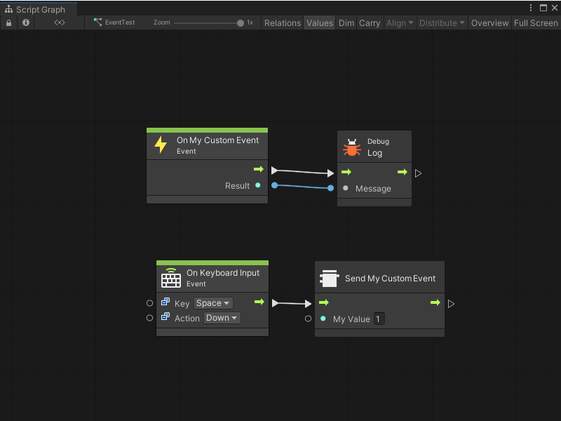

Custom Events¶
Events trigger, or start, a chain of logic in a Script Graph based on a specific occurrence in your application. Some Event types, such as On Start or On Update, exist by default in Visual Scripting. These Event nodes tell Visual Scripting to run the nodes they’re connected to after the Script Graph starts, or on every frame while the Script Graph is active.
You can also create your own custom Scripting Events to specify conditions for when a Script Graph’s logic runs.
Visual Scripting has two types of custom Events:
Custom Event nodes: Use Custom Event nodes and Custom Event Trigger nodes to raise simple custom Events that don’t require complex logic.
Custom Scripting Events: Create your own Custom Scripting Event nodes to raise more complex Event logic.
Custom Event nodes¶
Custom Event nodes are always accessible from the fuzzy finder. You don’t need to write your own code to use these custom Events in a Script Graph. They don’t require an event listener.
You can use the Custom Event node to create multiple custom Events, as long as you give each Event a unique name. You can also customize the number of arguments that the Custom Event node can send.
To configure a Custom Event node, you need to provide:
A unique name.
A GameObject.
The number of arguments the Custom Event receives.
For more information on how to configure and use a Custom Event node, see Add a Custom Event node.
To trigger a Custom Event, use a Custom Event Trigger node and provide the unique name of the Event. For more information, see Add a Custom Event Trigger node.
Visual Scripting displays errors in the Graph Inspector if the Custom Event node and a Custom Event Trigger node have different values for:
The name of the Event.
The provided GameObject for the Event.
The number of arguments for the Event.
![An image of the Graph Editor and Graph Inspector. An On Keyboard Input node with its Key set to Space and its Action set to Hold connects to a Custom Event Trigger node. The node triggers the MyEvent Custom Event node, which connects to a Debug Log node to write the value of Arg. 0 to the console. The Custom Event Trigger node displays in red, because its Arguments field is set to 0, while the Custom Event node has its Arguments set to 2. The Graph Inspector displays an Index out of Range Exception error.](../../../../../../_images/vs-events-custom-event-trigger-node-error-2.png)
All arguments on a Custom Event Trigger node must have values, even if the Custom Event node doesn’t give those values to another node. In the following example, Visual Scripting displays an error for both Arg. 0 and Arg. 1, even though Arg. 1 isn’t used.
![An image of the Graph Editor and Graph Inspector. An On Keyboard Input node with its Key set to Space and its Action set to Hold connects to a Custom Event Trigger node. The node triggers the MyEvent Custom Event node, which connects to a Debug Log node to write the value of Arg. 0 to the console. The Custom Event Trigger node displays in orange because its Arg. 0 and Arg. 1 input ports don't receive any input values. The Graph Inspector displays two warnings that state that Arg. 0 is missing, and Arg. 1 is missing.](../../../../../../_images/vs-events-custom-event-trigger-node-error.png)
Custom Scripting Events¶
You can create a Custom Scripting Event node with a C# script. With C#, you can customize all aspects of your Custom Scripting Event, such as which category or categories to use for your node in the fuzzy finder. For more information, see Create a Custom Scripting Event node.

To use and trigger the Event, code a Custom Scripting Event Sender node or another C# script:
For more information on how to send or trigger an Event with a node in a Script Graph, see Create a Custom Scripting Event Sender node.
For more information on how to send or trigger an Event with code, see Trigger a Custom Scripting Event from a C# script.
You can also use a C# script to listen to or receive your Event after you trigger it in a Script Graph. You can use your receiver script to trigger more logic in your application. For more information, see Listen to a Custom Scripting Event from a C# script.